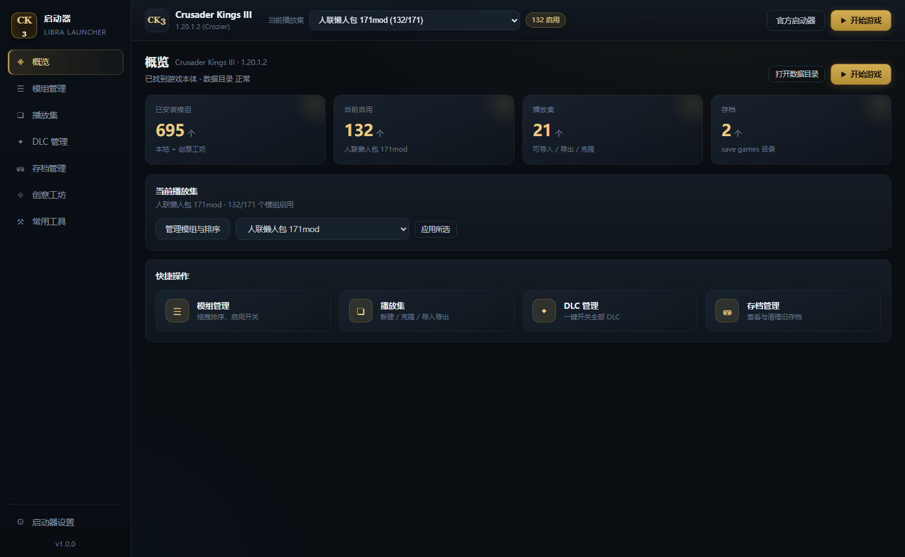
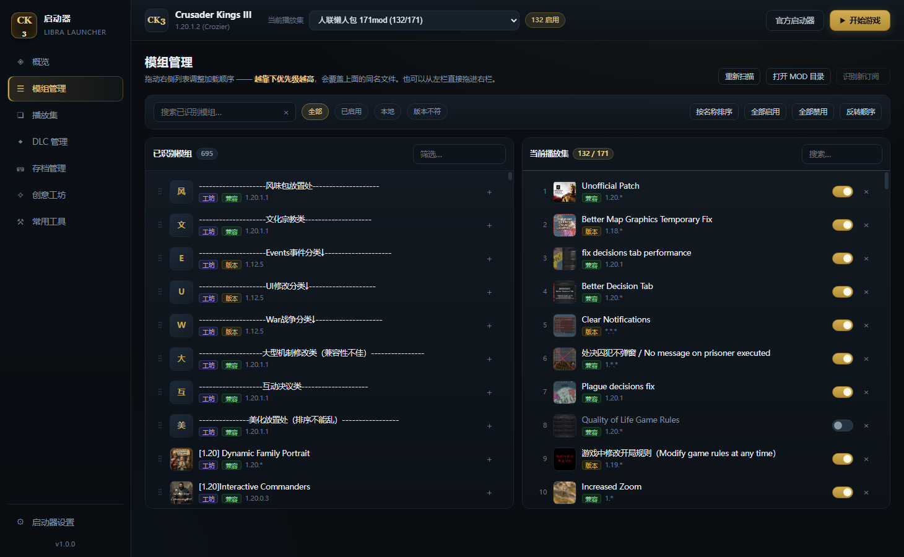
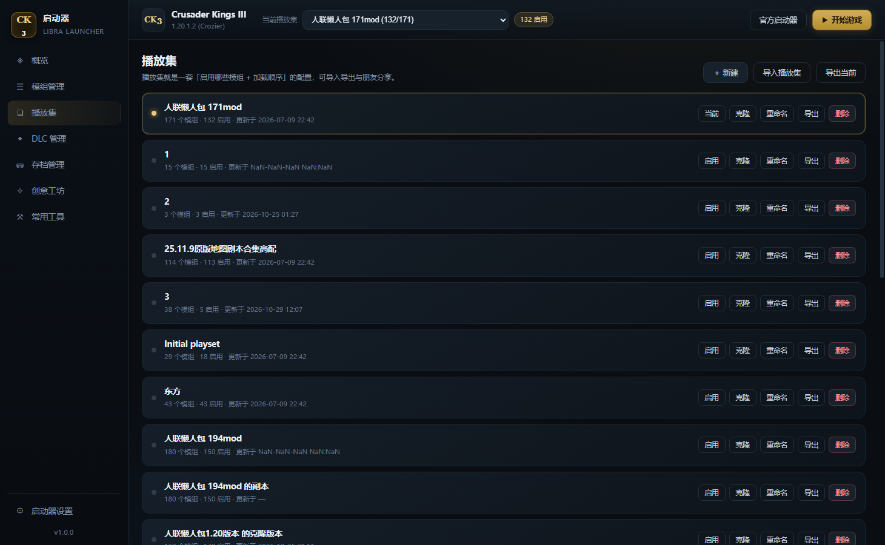
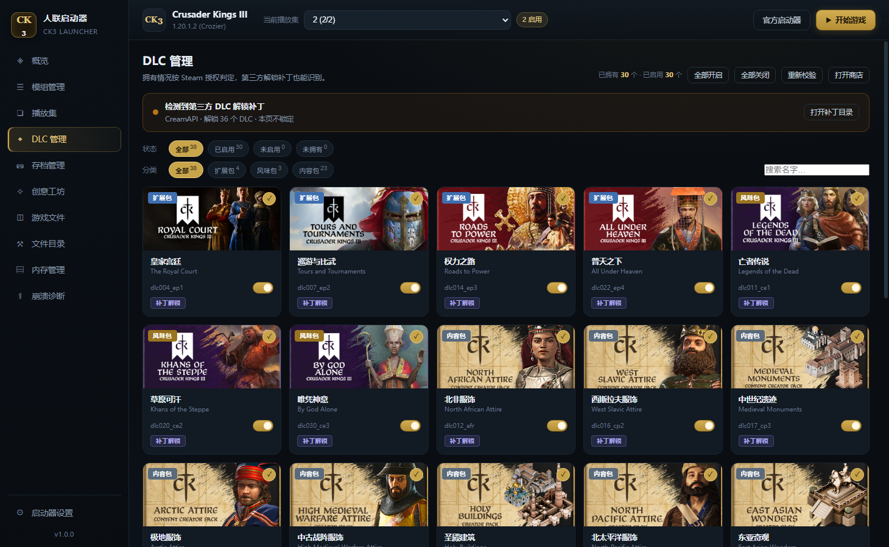
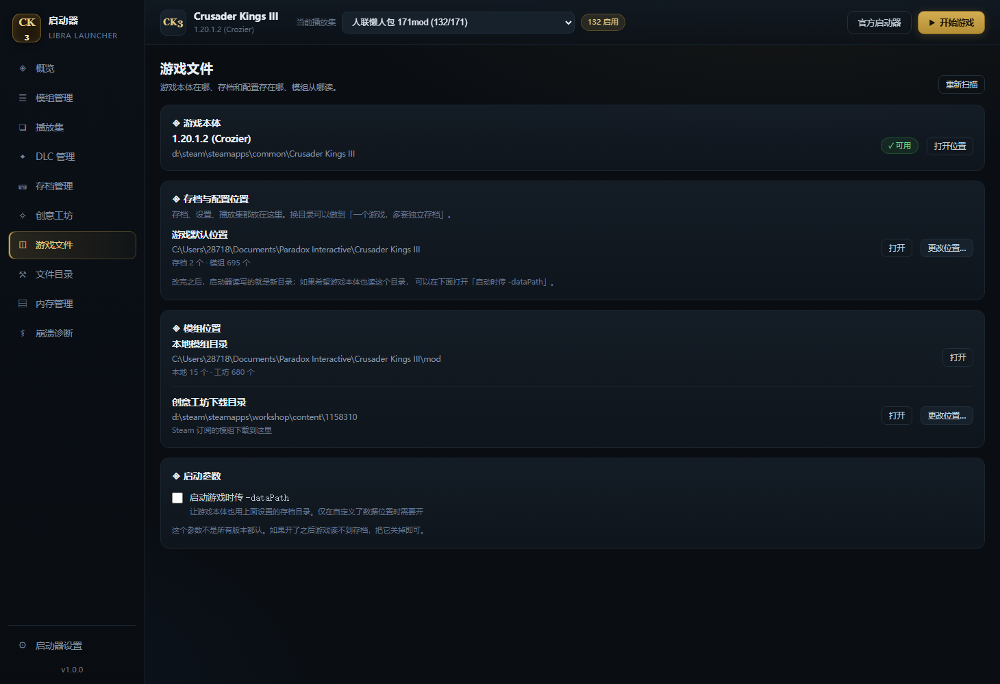
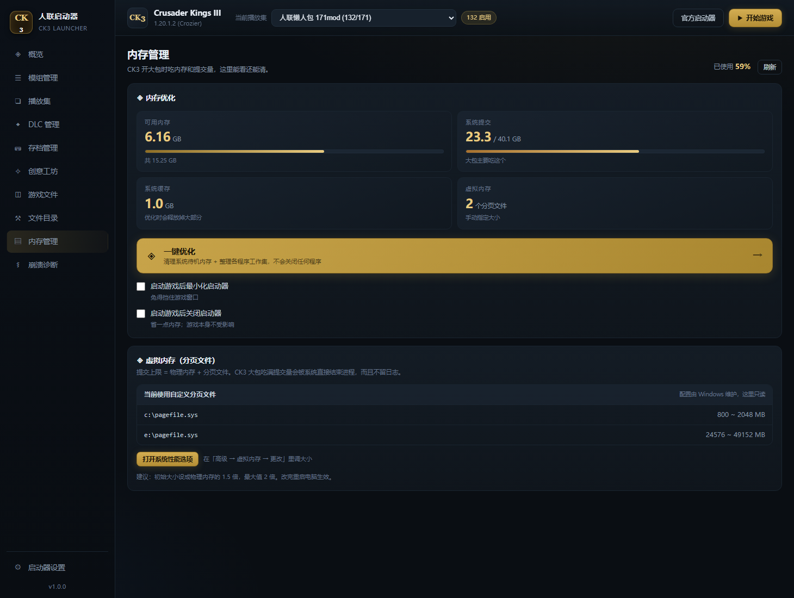
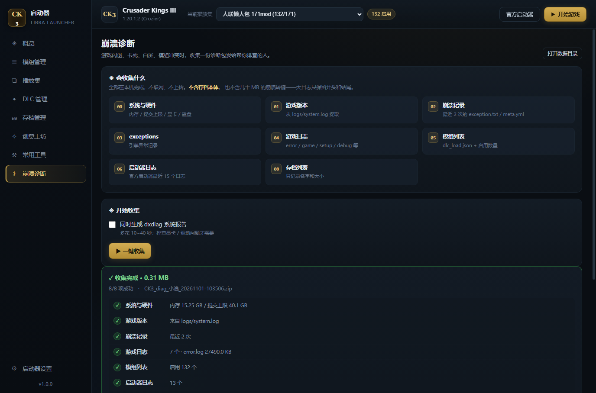
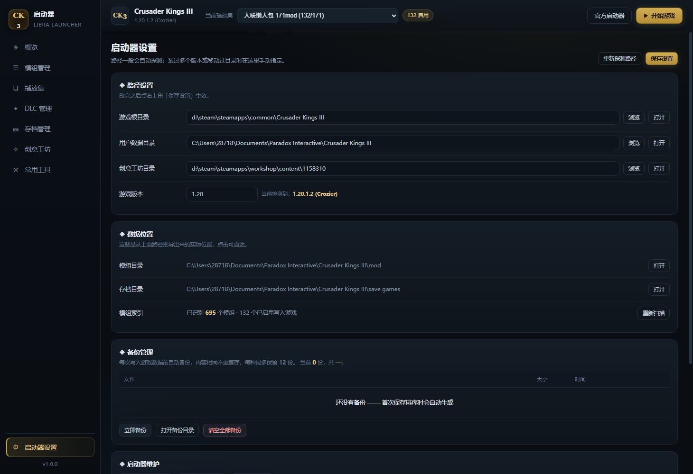

绿色免安装 · 双写排序 · 拖入安装 · 成就与 DLC 缓存 · 图文全解
解压压缩包，你会看到这样的目录：
| 文件 | 作用 |
|---|---|
人联启动器.exe | 主程序，双击它就能用 |
使用教程.html | 就是你现在看的这个页面，启动器顶部「使用说明」按钮也会打开它 |
说明.txt | 版本信息 + 被杀毒软件误报时怎么办 |
LICENSE.txt | 开源许可 |
img/ | 教程配图，不用管 |
运行一段时间后，程序目录里会自己多出几个文件（launcher-config.json 配置、
backups/ 备份、achievement_data_*.json 成就缓存、
dlc_data_*.json DLC 缓存、achievement_icons/ 成就图标）。
这些都是缓存和你的配置，删掉不会损坏游戏，只是下次要重新读一遍。
双击 人联启动器.exe，等两三秒窗口就会弹出来。第一次启动稍慢是正常的（程序要解压自身）。
程序不需要安装，也不会写注册表。整个文件夹可以拷到 U 盘、放桌面、改名，随便搬。删掉文件夹就等于卸载干净。
嫌每次找文件夹麻烦？到「启动器设置 → 启动器维护」点一下创建桌面快捷方式就行。
第一次启动会自动去找：
binaries/ck3.exe）文档/Paradox Interactive/Crusader Kings III）steamapps/workshop/content/1158310）如果概览页顶部显示「未找到 ck3.exe」，说明自动探测没成功，去左下角「启动器设置」里手动选一下游戏目录就好。

左边是导航栏，从上到下：
右上角有三个按钮：
顶部左侧还有个游戏切换下拉框。切到另一个游戏后，模组、播放集、DLC、成就都会自动换成那个游戏的数据，不用手动刷新。 如果你在外面手动装了模组，也可以在概览页点「⟳ 刷新」强制重读一遍。
黄色警告框的意思是：「游戏实际加载的模组」和「你播放集里勾选的」对不上。常见于手动改过文件、或用官方启动器改过播放集。点一下里面的按当前播放集修复就对齐了。

也可以从左栏直接拖进右栏，拖到哪一行上方就插到那个位置，不用一个一个点 ＋ 号。
排序的核心规则：越靠下，优先级越高。
游戏是从上往下加载的，后加载的模组会覆盖先加载的同名文件。
| 按钮 | 作用 |
|---|---|
| 排序 ▾ | 点开有三个选项：按 A→Z、按 Z→A、按名称排序（中文优先） |
| 反转顺序 | 整体上下颠倒，排查冲突时有用 |
| 全部启用 / 全部禁用 | 批量开关（不会改变顺序） |
| 导出播放集 | 把当前这套配置存成 JSON 文件 |
| 导入 Mod | 选压缩包安装本地模组（也可以直接拖进窗口） |
| 搜索框 | 左右两栏各自独立搜索，互不干扰 |
| 筛选标签 | 只看已启用、只看本地模组、只看版本不符的，排查崩溃很好用 |
「排序 ▾」点任何一项都会先问你一句：因为重排会覆盖你辛苦拖出来的顺序，而且没法一键还原（只能自己再拖回去）。 点「取消」就什么都不做。播放集里模组少于 2 个时不会弹窗，直接提示没有可排序的。
三种排序的区别：A→Z 严格按英文字母，中文排在英文后面；Z→A 反过来； 按名称排序（中文优先） 中英文混排，中文按字的读音排（就是旧版那个「按名称排序」的行为）。
每个模组名字下面会有一两个标签：
兼容：支持版本和你的游戏版本对得上。
版本：支持版本较旧，能用但可能出小问题。
缺失：描述文件指向的文件夹不见了（模组被删了）。
工坊 / 本地：来源。
CK3 的模组顺序其实存在两个地方：
launcher-v2.sqlite —— 官方启动器界面上显示的顺序dlc_load.json —— 游戏启动时真正读取的加载顺序很多工具只改其中一个，结果就是「界面顺序变了，游戏里没变」。本启动器每次保存会同时写这两处，所以：
顺序排不对，很多时候是两个 mod 改了同一个文件、互相打架。模组管理页工具栏上的「冲突排查」按钮就是干这个的：它扫描当前播放集里已启用的模组，一次性查出四类问题。
| 检测项 | 是什么意思 |
|---|---|
| 文件冲突 | 两个 mod 改了同一个游戏文件，排后面的赢（把前面的覆盖掉）。按影响大小分「高 / 中 / 低」，高的最值得看。 |
| 本地化键冲突 | 同一个翻译词条被多个 mod 定义，排后面的生效——汉化被「悄悄顶掉」多半是它。 |
| 依赖缺失 | 某个 mod 声明「需要前置 mod」，但播放集里没装。尽力匹配，可能有误报。 |
| replace_path 提示 | 这个 mod 会整目录替换原版文件，影响面大，装了它别的同类 mod 可能失效。 |
文件重叠不一定是坏事——很多 mod 本来就靠覆盖打补丁，高严重度的冲突才值得重点看。检测结果仅供参考，最终以游戏内实际表现为准。
左右两栏每个模组条目的右侧都有一个 ⋯ 按钮，点开是这个模组的全部操作。 左栏（已识别）和右栏（当前播放集）的条目都有。
| 菜单项 | 做什么 |
|---|---|
| 顶部标题 | 显示模组名和创意工坊 ID |
| 修改显示名称 | 只改启动器里显示的名字 |
| 恢复原始名称 | 改过名才会出现，一键还原 |
| 复制 MOD ID | 把创意工坊 ID 复制到剪贴板 |
| 打开 MOD 目录 | 资源管理器直达这个模组的文件夹 |
| 打包此 MOD（导出 zip） | 把这个模组打成可分享的压缩包，见第 7 章 |
| 收藏到收藏夹 ▶ | 收进你自建的收藏夹，可多选 |
| 标记为本地 / 标记为工坊 | 自动判定错了时手动纠正来源标签 |
| 打开创意工坊页面 | 浏览器打开这个模组的 Steam 创意工坊页 |
| 删除此 MOD | 红色项，删描述文件 + 内容，走回收站 |
只改启动器界面上的显示名，存在启动器自己的 mod-aliases.json 里。
.mod 描述文件用来把一长串英文名改成自己看得懂的名字很方便，比如把 Unrestricted Duel 显示成「无限制决斗」。
「工坊 / 本地」是按 .mod 里 path 指向的真实目录判定的：
指向 steamapps/workshop/content/ 就是工坊，指向你自己 mod 目录就是本地。
如果确实判错了（比如某个 mod 你确信是本地版却显示工坊），用菜单里的 「标记为本地 / 标记为工坊」手动纠正，之后会一直记住。改过之后菜单里会多出 「恢复自动判定来源」，点一下退回自动判断。
模组多起来以后，靠搜索找太慢。收藏夹可以自己归类，而且数量不限。
工具栏下面有一行 收藏夹 标签，最右边是 ＋。点它输入名字就行，
名字随便起（1、2、3、必装、汉化 都行）。
任意模组的 ⋯ → 收藏到收藏夹 ▶，弹出子菜单列出所有收藏夹， 已收藏的带 ✓，点一下收藏/取消。同一个模组可以同时进多个收藏夹。
点收藏夹标签（比如「1 (5)」），左栏立刻只显示这个夹里的 5 个模组。点「全部」回到完整列表。 标签上的数字就是夹里的模组数。
在收藏夹标签上右键：
del → 删除这个收藏夹（只删夹子，不会删模组）「删除此 MOD」会删掉 .mod 描述文件和它对应的内容文件夹，都进 Windows 回收站，删错了可以还原。
如果删的是工坊模组，只要 Steam 里还订阅着，下次启动游戏会被重新下载回来 —— 要彻底删掉得先去创意工坊取消订阅。
从别处拿到的模组压缩包，直接拖进启动器窗口就能装，不用手动解压、不用自己写描述文件。
.zip / .7z / .rar 从资源管理器拖到启动器窗口任意位置。可以一次拖多个，会挨个安装，每个都显示成功或失败原因。
拖拽不灵的话，工具栏的 「导入 Mod」 按钮走的是同一个安装逻辑，只是用文件选择框挑包。
解压到 文档\Paradox Interactive\<游戏>\mod\<包里的文件夹名>\，
并自动生成对应的 .mod 描述文件。描述文件里会保留 name、
version、supported_version、picture、tags、dependencies。
| 情况 | 处理 |
|---|---|
| 包里有同名模组 | 自动加后缀 _2、_3，绝不覆盖已有模组 |
| 文件夹名是中文 | 转成 ASCII 安全名（CK3 读不了中文路径） |
包里没有 descriptor.mod | 明确报错，并列出包里顶层有什么，不会瞎装 |
| 压缩包设了密码 | 提示「这个压缩包设了密码，解不开」 |
| 压缩包损坏 | 一秒内报错，不会卡住 |
| 包超过 400MB | 先拦下，提示手动解压 |
不需要装 7-Zip 或 WinRAR。解 7z / rar 用的是 Windows 系统自带的
tar.exe（它其实是 bsdtar，原生支持这些格式）。
装好的模组只是进了「已识别」列表，不会自动加入当前播放集 —— 需要你自己点 ＋ 或拖到右栏，这样不会打乱你现有播放集的顺序。

播放集就是配置方案。比如「纯净原版」「人联懒人包」「大梦春秋」各存一套，切换时不用重新勾选。
| 按钮 | 说明 |
|---|---|
| 启用 | 把这一套设为当前使用，并同步到游戏 |
| 克隆 | 复制一份再改，原方案不受影响 |
| 重命名 | 改名 |
| 导出 | 存成 .json 文件 |
| 删除 | 删掉（会先自动备份数据库） |
xxx.json 文件，发给朋友。模组管理页工具栏上也有一个「导出播放集」按钮，作用和这里一样，省得来回切页面。
导入不会覆盖你现有的播放集，而是新建一个，所以可以放心导入别人的配置来试。
看到好用的模组，想打包下来存本地或发给朋友？用菜单里的 「打包此 MOD（导出 zip）」。
76 / 180 个文件 和百分比。结构是特意设计成「别人拖回启动器就能直接装」的：
你的模组名/ —— 完整的模组内容（common/、events/、localization/ …）你的模组名.mod —— 顶层描述文件，path 写成相对路径，不绑死你的电脑所以对方既可以直接拖进启动器装，也可以解压后手动丢进 mod 目录 —— 两种方式都能用。
.git、__pycache__、.idea、Thumbs.db、.DS_Store 这些没用的东西不会被打进去。
目录名也会转成 ASCII 安全格式，避免别人装完 CK3 读不到。
大模组（几百 MB）压缩要几十秒，进度条会一直动，耐心等一下就好。中途可以关掉面板，后端会继续把包写完。
打出来的包不包含工坊订阅关系。如果你打的是别人的工坊模组， 请遵守原作者的使用许可 —— 自己留着玩没问题，公开发布前最好先征得同意。

读的是游戏目录下的 game/dlc，所以你有什么 DLC 就显示什么，不会凭空多出来。
右上角会显示「已拥有 X 个 · 已启用 Y 个 · 未拥有 Z 个」。状态分三种：
| 状态 | 样子 | 能不能点 |
|---|---|---|
| 已拥有 + 已启用 | 卡片亮、开关金色 | 能，点一下停用 |
| 已拥有 + 已停用 | 卡片变暗、开关灰色 | 能，点一下重新启用 |
| 未拥有 | 整张卡灰掉、左上角 🔒「未拥有」 | 不能，会提示 Steam 里没有授权 |
页面最上方有一张状态卡，自动识别第三方 DLC 解锁补丁（CreamAPI 等），三种样子：
steam_api64.dll 换回原版，提示重新覆盖补丁卡上有「打开补丁目录」按钮，直达 binaries/ 目录。
卡片上方两行筛选，可以叠加：
分类按 DLC 目录名的官方后缀判定（ep 大型扩展、ce 核心扩展、fp 风味包、
bp 事件包、cp 内容创作者包、sp 装饰包、mp 音乐包），
和 Paradox 官方定义一致。
比如同时点「已启用」+「风味包」，就只看风味包里已启用的。右边还有搜索框，按名字或目录名过滤。
先看有没有装解锁补丁，装了就直接按「全部可用」处理。没装就问你的 Steam 客户端， 用的是和 Steam 库里那张 DLC 卡片完全一样的授权数据。
所以结果一定是一致的：Steam 说你没有，游戏里就是锁的，这里也锁。 不会出现「这里显示能开、进游戏却是灰的」这种情况。
如果 Steam 没开，本启动器问不到结果，就不锁定任何 DLC， 页面顶部会显示一条黄色提示。把 Steam 打开（保持登录），再点右上角 「重新校验」即可。
这样设计是为了不误伤 —— 宁可暂时不锁，也不要把你花钱买的 DLC 判成没有。
Paradox 在 Steam 商店里没给 DLC 设中文名（切成简体中文看到的还是英文）， 游戏自己的中文语言包里也没有 DLC 名称的翻译。 所以本启动器内置了一份中文名对照表。
覆盖全部支持的游戏（十字军之王、钢铁雄心、欧陆风云、维多利亚、群星、城市天际线等）， 目前一共 260 多个 DLC。卡片上这样显示：
大字是中文名，下面小字是英文原名
以后 Paradox 出了新 DLC，名字还是英文怎么办？
不影响使用。新 DLC 会照常出现在列表里，开关、校验、购买提示全都正常， 只是标题暂时显示英文原名。等启动器更新加上翻译，就会自动变成中文。
等不及的话，也可以自己加一行 —— 见下面一节。
两种情况：新出的 DLC 还没有中文名，或者你觉得某个译名不顺眼想换掉。 这两种都能自己改，不用碰程序文件。
dlc-names-cn.json
（第一次点会自动生成，里面已经带了说明和示例）。"英文原名": "中文名",改完大概是这个样子（下面三行是示例，你自己的文件里已经有了）：
英文名怎么写都行，大小写不限，前面那些 Expansion -、
Victoria 3:、- Immersion Pack 之类的词可以省略，程序会自动匹配。
最稳的办法：直接复制 DLC 卡片上那行英文小字，粘到引号里。
这个文件是 JSON 格式，两条规矩必须守：
,（最后一行不要加）"，中文引号 “” 不认文件改坏了（比如漏了逗号），整个对照表会失效，DLC 名字全部退回英文。 遇到这种情况不用慌，把文件删掉重启启动器，就会重新生成一份干净的模板， 内置的 260 多个中文名照样在。
这里写的名字优先级最高，会覆盖内置的翻译。 同一个 DLC 你改成什么，卡片上就显示什么。
DLC 的清单、封面、介绍、「是否已购买」的判定结果，问一次 Steam 就会存到本地
dlc_data_<游戏>.json，之后打开页面直接读本地、不再问 Steam，速度差别很大：
| 场景 | 耗时 |
|---|---|
| 第一次进入（扫文件 + 问 Steam） | 约 0.05 秒起，网络差时更久 |
| 之后再进（纯读本地缓存） | 约 0.006 秒 |
| 点「重新校验」 | 约 0.3 秒（重扫文件 + 重新问 Steam） |
统计条末尾会写明数据来源：本地缓存 · 2026-11-03 10:58。
在 Steam 里刚买了新 DLC？缓存里还是旧的「未拥有」，点右上角「重新校验」刷新一下就好。
「已启用」这个勾选状态不进缓存，因为它跟着当前播放集走，每次都是实时算的， 所以切换播放集时勾选不会乱。
点「详情」看到的那个带截图和长介绍的弹窗，内容也会缓存 7 天。 网络不好时如果有旧缓存，会直接用旧的显示，不会给你一片空白。
左侧边栏的 ★ 成就，能看到你在这个游戏里解锁了多少、什么时候解锁的、全球有多少人拿到。
不是截图识别的，也不是猜的 —— 读的是你本机 Steam 的真实记录：
Steam/appcache/stats/UserGameStatsSchema_<AppID>.bin
（中英文名、描述、图标、所属 DLC）UserGameStats_*.bin 里的 AchievementTimesgame/gfx/interface/icons/achievements/ 里的 DDS 贴图所以显示的数字和你 Steam 客户端、游戏里看到的完全一致。
110 / 198 · 56%和 DLC 一样，读一次就存本地（achievement_data_<AppID>.json），
下次打开秒开、完全不碰 Steam。
| 场景 | 耗时 |
|---|---|
| 第一次（读 Steam 缓存 + 拉全球完成率） | 几秒 |
| 之后打开 | 0.1 秒以内 |
筛选栏右侧会显示 本地缓存 · 2026-11-03 10:48。
在游戏里解锁了新成就？点右上角 「⟳ 刷新」 重新同步一次。平时不用管。
成就图标第一次显示时会从游戏的 DDS 转成 PNG 存到 achievement_icons/，
之后就是本地读取（不到 1 毫秒），断网也能正常显示。
「全球 X%」需要连上 Steam 接口，国内网络经常连不上。 连不上时这一栏会自动隐藏，右上角显示「全球完成率暂不可用」，其余功能照常。
开了加速器之后点一次「刷新」就能补上。
隐藏成就（Steam 上要求保密的那种）解锁前只显示「隐藏成就 · 解锁后显示说明」，解锁后才显示真实描述 —— 和 Steam 客户端的行为一致。
列出 save games 目录下所有 .ck3 存档，显示大小和修改时间。
删除走的是 Windows 回收站，删错了可以右键还原。但铁人档删了就没了，删之前想清楚。
顺带说明：CK3 的存档是压缩过的二进制格式，读不出角色名和年份，所以只能显示文件名、大小、时间——这一点和官方启动器一样。
在创意工坊点订阅后，Steam 只是把文件下载下来，游戏还认不出它——必须在
mod 文件夹里生成一个叫 ugc_数字.mod 的小描述文件，游戏才知道有这个模组。
这个描述文件平时是官方启动器帮你生成的。如果你订阅完直接开本启动器，就会在模组列表里看到 标着 未识别 的模组，而且加不进播放集。
解决办法：点模组管理页右上角的「识别新订阅」按钮（有未识别模组时按钮上会显示数字）， 一键生成，秒完成。没生成过就别管它，按钮是灰的。
14 个快捷入口，点一下就打开对应目录：
| 入口 | 什么时候用 |
|---|---|
| 游戏根目录 | 看版本信息、找 exe |
| 游戏 common / events / gui | 自己写 mod 时查原版文件 |
| 本地 MOD 目录 | 看 .mod 文件、放自制 mod |
| 创意工坊目录 | 看订阅的模组本体 |
| 日志目录 | 游戏报错先看这里的 error.log |
| dlc_load.json | 游戏真正读取的启用列表 |
| launcher-v2.sqlite | 官方启动器的播放集数据库 |
| 自动备份目录 | 回滚用，见下一节 |
游戏崩溃或模组冲突，第一件事是打开日志目录看 error.log 末尾，script error 会直接告诉你是哪个模组的哪个文件出错。
游戏本体在哪、存档和配置存在哪、模组从哪读——这一页一目了然，而且都能改。

存档、设置、播放集全都放在这个目录里。默认是：
C:\Users\你的用户名\Documents\Paradox Interactive\Crusader Kings III
点更改位置可以换成别的目录，用途比如：
换目录不会自动搬存档。正确的做法是：先把旧目录里的 save games 文件夹复制到新目录，
再在启动器里切换。切错了点「恢复游戏默认位置」就能回来。
两个目录：
数据目录\mod，游戏实际加载的 .mod 文件都在这steamapps\workshop\content\1158310）挪过 Steam 库、或者用了多个硬盘的话，这里可以手动改工坊目录。
勾上之后，启动游戏时会带 -dataPath 参数，让游戏本体也去读你设置的数据目录。
只有在你确实换了数据位置、又希望游戏跟着走的时候才需要开。
这个参数不是所有版本都认。开了之后如果游戏读不到存档，把它关掉就行。
如果你是想让不同游戏版本各用各的存档和模组，建议直接用左边的「版本切换」页， 那里有配套的一键开关和说明，见第 14 节。
侧边栏的「版本切换」页是 1.6 新增的，把两件完全不同的事放在了一起。先分清它们，后面的操作就不会乱：
| 你想做的事 | 用哪一张卡 | 它实际改的是 |
|---|---|---|
| 把游戏本体换成 1.19 / 1.20 之类的历史版本 | 通过 Steam 切换游戏版本 | Steam 清单里的分支，游戏文件由 Steam 重新下载 |
| 让两套版本各用各的存档和模组 | 版本配置（多版本） | 用户数据目录（存档 / 模组 / 设置） |
最常见的一个误会：切了「版本配置」，以为游戏本体也跟着换版本了——不会。 版本配置只换数据目录，游戏跑的还是同一个 exe。要换本体必须走下面的 Steam 分支。
每个游戏都能建任意多套配置。建到 2 套以上，顶栏就会出现一个版本下拉，选一下等于整套切换。
点「新增版本配置」时，程序会自动建一个独立目录（默认数据目录旁边的兄弟目录，
形如 …\Crusader Kings III - 1.19），不用自己想名字，省得两个版本串在一起。
新建的目录是空的，所以第一次切过去会看到「全新存档 + 没有模组」，这是正常的。 正确用法：把那个版本要用的模组和存档复制进这个目录，两边就彻底分开了。
如果你本来就只想共用一套存档，那不用改数据目录，保持默认即可。
游戏本体默认只读文档\Paradox Interactive\… 那个目录。你在这里填了别的数据目录，
必须让游戏启动时带上 -dataPath 参数，它才会真的去读你填的那个。
这张卡里就有一个开关，点一下开启 / 取消，不用再去别的页面找。卡片上会实时显示当前状态：
这跟你在 Steam 里点「属性 → 测试版」选一个分支，改的是同一个字段（清单里的 BetaKey），
只是这里少点几下。所以它做的事和 Steam 里切换完全等价，不存在「启动器专用版本」。
支持的游戏：十字军之王 III、群星、钢铁雄心 IV、欧陆风云 IV / V、维多利亚 3、十字军之王 II、 帝皇：罗马、城市：天际线 1 / 2 —— 切到哪个游戏，就抓哪个游戏的分支列表，各算各的。
切换前游戏必须完全退出。游戏开着时 Steam 不会更新，文件也会被占用。
如果任务管理器里还残留一个 ck3.exe（内存很小、结束任务也杀不掉），那是上次异常退出留下的
僵尸进程，只能重启电脑清掉。否则 Steam 会一直显示在下载、进度却一动不动。
切换前会自动把清单备份成 appmanifest_<AppID>.acf.bak，想退回去直接用它覆盖即可。
下载量：相邻版本通常只补差量（几百 MB），跨大版本可能要几 GB。下载完成前进游戏，版本号不会变。
「启动器设置 → 路径」里的游戏版本是缓存的，换完版本不会自己变。 点旁边的刷新重新读一次，模组列表的兼容性标签才是对的。
侧边栏的「百科」页把游戏里最容易忘的资料做成了速查表，共 932 条： 军队兵种、文化、传统、宗教、革新、信条、教义。全部离线可查，不用切浏览器、不用等网页加载。
数据不是从网上抓的，而是直接读你游戏本体里的脚本和官方本地化
（common/men_at_arms_types、common/culture、localization）。
所以版本和你装的 DLC 完全一致，中文是官方译名，断网也能用。
| 标签 | 条目 | 能查到什么 |
|---|---|---|
| ⚔ 军队兵种 | 111 | 伤害、坚韧、追击、掩护、规模、攻城、补给；展开还有简介、克制 / 被克制、地形加成、冬季加成 |
| 🏛 文化 | 244 | 文化精神、文化传承、语言，该文化拥有的全部传统（含 DLC 传统，三列表格） |
| ✦ 传统 | 197 | 实际效果条目 + 简介，外加「哪些文化拥有这项传统」 |
| ☪ 宗教 | 49 | 所属宗教组、简介，以及该宗教配置的全部教义 |
| ✧ 信条 | 97 | 效果条目、简介，按「通用 / 需 DLC」筛选 |
| ⚖ 教义 | 126 | 按教义组筛选（共 49 组，用下拉框）、效果条目、简介 |
| ⚙ 革新 | 108 | 所属时代、民政 / 军事类别、相关能力、效果 |
军队兵种页最上面固定着一张环形速查图，圆形节点按顺时针连成闭环， 右边还列出全部克制关系：
每个兵种展开后还会单独列出「克制（对其伤害提升）」和「被克制（受其压制）」， 列表行右侧也会直接标一个「克 XXX」，不用点开就能看到。
以轻步兵为例：伤害 10 / 坚韧 16 / 追击 10 / 掩护 16 / 规模 100， 下面会列出「地形加成：森林 +4/+6」和「克制：重步兵 ×1」。
地形和冬季加成里的正负值有颜色区分：绿色是加成、红色是减益， 比如弓骑兵在丛林里会显示「伤害 −20 追击 −30」（红字），在草原则是「伤害 +20」（绿字）。 冬季等级也做了中文化：普通冬季 / 严寒冬季。
效果取自游戏脚本里的 parameters、修正值和 script_values 常量，
百分比、发展度这些都是游戏里的真实数值，不是占位符；
婚姻类传统（多配偶制、侧室）的效果在 partners 块里，也一并列出来了。
百科数据会缓存（程序目录下的 wiki_cache_*.json），平时打开是秒开的。
详情底部的按钮会用默认浏览器打开 ck3.paradoxwikis.com 上对应的条目。
只做跳转、不抓内容——那个站点有防爬校验，程序直接抓会被拦，也没必要把整站搬进本地。
目前只做了《十字军之王 III》的百科。切到群星 / 钢铁雄心等游戏时这一页会提示「暂未收录」， 不影响其他功能。

| 指标 | 含义 |
|---|---|
| 可用内存 | 还能拿来用的物理内存。低于 1 GB 时游戏会开始卡 |
| 系统提交 | 物理内存 + 分页文件的总量，大包真正吃的是这个 |
| 系统缓存 | Windows 拿来做缓存的内存，这部分可以随时释放 |
| 虚拟内存 | 你有几个分页文件 |
很多人 16 GB 内存跑 200 模组不崩，靠的就是分页文件把「提交上限」撑到 40 GB。 如果提交上限和物理内存差不多（比如都是 16 GB），说明分页文件被关了或设得很小，大包一开就容易被系统直接杀进程。
做两件事：清空系统待机内存（那些"看着被占用、其实可以回收"的缓存）， 再把各程序的工作集整理一遍。不会关掉任何程序。
实测能腾出 1~4 GB，进游戏前点一下就行。
清理系统待机内存需要管理员权限。 如果启动器不是以管理员身份运行的，这个按钮会变成灰色并提示「需要管理员权限」， 点一下它会让你以管理员身份重新打开——Windows 会弹一个确认框，选「是」就行。
不想提权也能用，只是效果会打折扣（只能整理工作集，清不掉系统缓存）。
点打开系统性能选项会直接跳到 Windows 改虚拟内存的地方： 「高级 → 虚拟内存 → 更改」，勾「自动管理」，或者手动把初始大小设成物理内存的 1.5 倍、最大值设成 2 倍，确定后重启。
改完必须重启电脑才生效。提交上限变大之后，大包稳定性会明显好一些。
游戏闪退、卡死、白屏、进不去、模组冲突时，用这里收集一份诊断包，发给帮你排查的人。

| 编号 | 内容 | 用途 |
|---|---|---|
| 00 | 系统与硬件 | 内存、提交上限、显卡、磁盘 |
| 01 | 游戏版本 | 确认版本号对不对 |
| 02 | 崩溃记录 | 最近 2 次的 exception.txt |
| 03 | exceptions | 引擎异常记录 |
| 04 | 游戏日志 | error / game / setup / debug |
| 05 | 模组列表 | dlc_load.json + 启用数量 |
| 06 | 启动器日志 | 官方启动器最近 15 个 |
| 08 | 存档列表 | 只记名字和大小 |
不会打包存档本体，也不会打包几十 MB 的崩溃转储（.dmp）。超大日志只保留开头 800 行和结尾 3000 行， 所以整包通常只有几百 KB，发得出去。
如果保存时点了取消，诊断包还在临时目录里，点「打开临时目录」就能找到。
每项前面有 ✓ 就是采到了。下面还有一段自动摘要，会直接点出常见问题，比如：
如果某项显示 ! 号，不代表收集失败，可能是本来就没有那类文件（比如从没崩溃过就没有 crashes 目录）。 这本身也是有意义的信息。
点左下角「启动器设置」。里面是这几块：

三个目录一般会自动探测，装过多个版本、或移动过游戏目录时才需要手动改：
| 项目 | 该指向哪里 |
|---|---|
| 游戏根目录 | 含 binaries\ck3.exe 的文件夹 |
| 用户数据目录 | 含 mod 文件夹和 launcher-v2.sqlite 的文件夹（通常在「文档\Paradox Interactive」下） |
| 创意工坊目录 | steamapps\workshop\content\1158310 |
| 游戏版本 | 只用于模组兼容性判断，不改游戏、不改文件 |
每行右边的「打开」按钮可以先看一眼确认对不对。改完点右上角保存设置生效。 改乱了就点「重新探测路径」重来。
「游戏版本」这栏平时不用碰。它只是用来判断模组列表里「兼容 / 版本」标签的基准： 拿你填的版本去和每个 mod 声明支持的版本比对。
留空 = 自动跟随检测到的真实版本（最省心）。只有当你需要提前验证某个旧版本下模组兼容性时才手动填， 点旁边的「同步为检测版本」能一键对齐。
从上面三个路径推导出来的实际位置，显示模组目录、存档目录在哪，以及当前识别了多少个模组。 这里的「重新扫描」等于重读硬盘，装完新模组懒得重启就用它。
程序每次往游戏数据里写东西前，都会先存一份备份，出问题能退回去。
觉得备份占地方？这里能看到总占用，清一下就行。备份通常很小，只有数据库那份是 1 MB 出头。
点检查更新，程序直接拿内置的更新地址去比对，不用自己填任何地址：
「版本配置」和「通过 Steam 切换游戏版本」已经不在设置里了，挪到了左侧边栏的 「版本切换」页，操作说明见第 14 节。
用压缩包里的 启动器-调试.bat（如果有）或直接在命令行跑 exe 看报错。常见原因是系统缺少 WebView2 运行时——Windows 10/11 一般自带，实在没有可以去微软官网装「WebView2 Runtime」。
程序在 WebView2 不可用时会自动改用 Edge 应用模式打开，界面一样。
Paradox 官方启动器会独占 launcher-v2.sqlite 数据库。把官方启动器彻底关掉（注意托盘图标也要右键退出），再点保存。
说明路径没探测对。去「启动器设置」，手动选用户数据目录（就是有 mod 文件夹和 launcher-v2.sqlite 的那个），保存后会重新扫描。
这是误报。程序是用 Python 打包的单文件 exe，运行时需要「自己解压自己 → 释放文件到临时目录 → 启动子进程」，
这套行为在杀毒软件的机器学习模型里很像病毒，再加上没买数字签名证书，就容易被判成
Trojan:Win32/xxx!ml（末尾的 !ml 就是机器学习猜的，不是真病毒特征）。
解决办法：
多半是旧窗口还开着。启动器有单实例限制，旧进程没退干净时，新 exe 双击只会把旧窗口调到前台， 你看到的就是旧版本。
把任务栏里所有「人联启动器」窗口都关掉（包括最小化的），等两三秒再打开新的。
gfx/interface/icons/achievements/ 转的。
如果你删过游戏文件，或者这个成就在你游戏版本里没有图标，就会退回显示成就名的第一个字。可能原因：
新版已经不需要了：解 7z / rar 用的是 Windows 系统自带的 tar.exe。
如果你还在用很老的版本，更新一下就好。
不会。程序只碰 launcher-v2.sqlite 和 dlc_load.json 两个文件，从不主动动 save games 里的存档（除非你在存档页自己点删除，那也是进回收站）。
可以。整个文件夹压缩发给他就行，他电脑上只要有 CK3。模组配置用导出播放集分享，比发整个文件夹靠谱。
按顺序排查，基本就这三种情况：
ck3.exe（内存很小、结束任务也杀不掉）—— 有就重启电脑清掉只有当前游戏建了 2 套以上版本配置时才会出现，只有 1 套就自动隐藏。
另外它是按游戏分开的：切到群星只会显示群星自己的配置，不会残留 CK3 的版本号。
多半是没开 -dataPath。去「版本切换」页把「独立数据目录」开关打开，游戏才会去读你填的那个目录。
另外新目录默认是空的，得先把要用的存档和模组复制进去。详见第 14 节。
| Ctrl + F | 模组管理页聚焦搜索框 |
| Ctrl + S | 立即保存当前排序（平时是自动保存的） |
每次写入游戏数据前，都会自动把原文件备份到程序目录下的 backups/：
launcher-v2-年月日-时分秒.sqlitedlc_load-年月日-时分秒.json最多保留最近 30 份，旧的自动清理。
backups 文件夹，按时间找到你要的那份文档\Paradox Interactive\Crusader Kings III\ 覆盖同名文件回滚前建议先把当前的 launcher-v2.sqlite 和 dlc_load.json 复制一份出来，免得覆盖掉你最新改好的配置。
运行过程中会自己生成一些缓存文件，都是可以随时删的，删了不会损坏游戏，只是下次要重新读一遍：
| 文件 | 内容 | 删了会怎样 |
|---|---|---|
launcher-config.json | 你的设置（路径、当前游戏等） | 要重新设置路径 |
achievement_data_<AppID>.json | 成就清单 + 解锁记录 | 下次打开重新读 Steam |
achievement_global_<AppID>.json | 全球完成率 | 重新联网拉 |
achievement_icons/ | 从游戏 DDS 转出的成就图标 | 重新转一次（几秒） |
dlc_data_<游戏>.json | DLC 清单 + 授权判定 | 重新问一次 Steam |
dlc_detail_cache.json | DLC 详情（介绍、截图） | 重新拉 |
mod-aliases.json | 你改过的模组显示名 | 改名记录会丢 |
mod-collections.json | 你建的收藏夹 | 收藏夹会丢 |
backups/ | 自动备份的 sqlite / json | 就不能回滚了 |
想清清爽爽重来一遍：删掉除 launcher-config.json 和 backups/ 之外的那些就行。
程序不上传任何数据、没有统计和遥测。界面用的是本机回环端口（只监听 127.0.0.1，外部访问不到）。
会联网的只有这三处，而且都可以不用：
这三处连不上时程序都会自动降级，不影响其他功能。